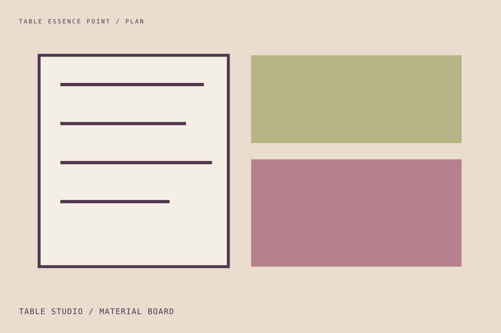
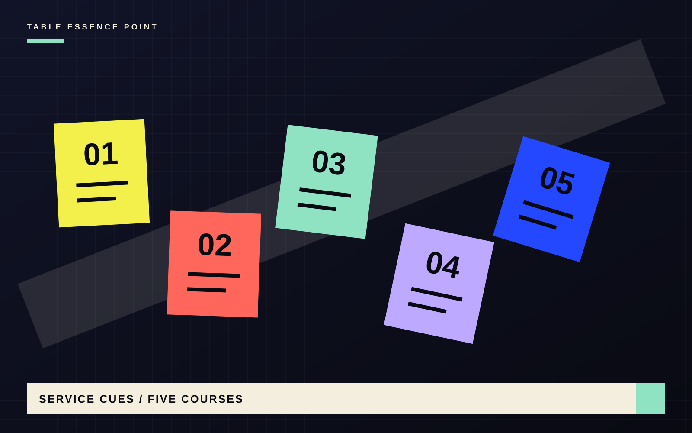

Table studio / backstage
Plan the work that guests should never see.
Connect guest count, table width, menu, materials, lighting and clearing into one calm service plan.

Method / four calls
Count. Ground. Compose. Rehearse.
- 01
Count
Define seats, usable table dimensions and comfortable place width.
- 02
Ground
Choose linen or a bare surface that supports food, sound and light.
- 03
Compose
Arrange only the vessels, light and serving pieces the menu needs.
- 04
Rehearse
Test reach, sightlines, hot dishes and the clearing route.

Service cues / five courses
Structure should reduce interruption.
Prepare what can be finished early, choose where used dishes will go, and keep one open landing surface for the next course. The goal is not ceremony; it is staying present.
Plan the menu pace